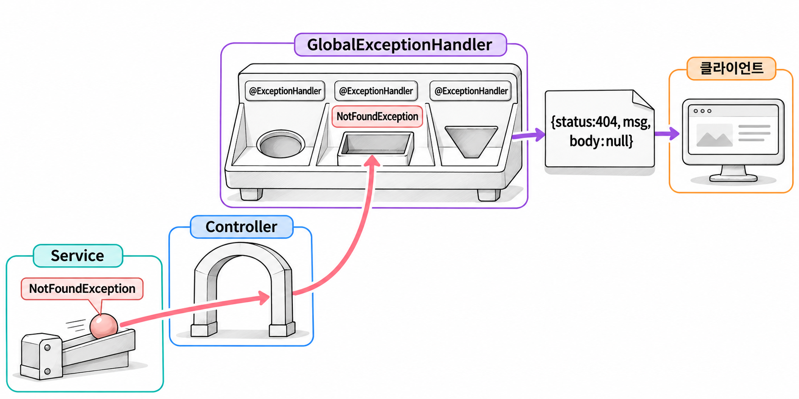

4장. 공통 응답이란?
컨트롤러는 성공하면 데이터를 돌려주고, 실패하면 상태 코드와 이유를 돌려줍니다. SSR 프로젝트에서는 실패했을 때 오류 페이지나 알림 창을 띄우면 됐습니다. REST API 서버는 JSON만 돌려주므로, 성공 응답과 실패 응답의 모양을 서버가 먼저 정해 두어야 합니다. 이 장에서는 모든 응답을 담을 Resp, 상태 코드별 예외 네 개, 예외를 한곳에서 받아 Resp로 바꾸는 GlobalExceptionHandler를 만듭니다.
1. 응답 모양을 통일하는 이유
공통 응답은 성공이든 실패든 모든 API가 같은 모양의 JSON으로 응답하도록 정한 형식입니다. 이 책에서는 status · msg · body 세 필드를 씁니다.
모양을 정하지 않으면 API마다 응답이 제각각입니다. 조회 API는 데이터만 보내고, 삭제 API는 본문 없이 보내고, 오류가 나면 스프링 기본 오류 응답이 나갑니다.
| 상황 | 통일하지 않은 응답 | 공통 응답 |
|---|---|---|
| 조회 성공 | {"id":1,"username":"ssar"} | {"status":200,"msg":"성공","body":{"id":1,"username":"ssar"}} |
| 삭제 성공 | (본문 없음) | {"status":200,"msg":"성공","body":null} |
| 실패 | {"timestamp":"...","status":400,"error":"Bad Request","path":"..."} | {"status":400,"msg":"이미 존재하는 유저네임입니다","body":null} |
가운데 열처럼 응답이 제각각이면 프런트엔드 개발자는 API마다 응답을 읽는 코드를 따로 짜야 합니다. 스프링 기본 오류 응답에는 사용자에게 보여 줄 만한 메시지도 없습니다. 오른쪽 열처럼 모양을 하나로 맞추면 읽는 방법도 하나로 줄어듭니다. status를 확인하고, 성공이면 body를 쓰고 실패면 msg를 화면에 보여 주면 됩니다.
2. Resp
2.1 record로 만든 응답 상자
Resp는 status · msg · body를 담는 상자입니다. 값을 담아 JSON으로 내보내기만 하고 바꿀 일이 없으므로 record로 만듭니다. record는 자바 16부터 정식으로 쓸 수 있는 클래스 형태입니다. 괄호 안에 필드를 적으면 컴파일러가 그 필드로 생성자와 접근자 메서드를 만들어 줍니다.
기본 문법
public record 이름(타입 필드1, 타입 필드2) {
// 필요하면 메서드를 추가한다
}record Resp(Integer status, String msg, Object body)라고 쓰면 private final 필드 세 개, 세 값을 받는 생성자, status() · msg() · body() 접근자가 생깁니다. 일반 클래스와 달리 접근자 이름에 get이 붙지 않습니다. JSON 변환을 맡는 Jackson은 record의 접근자를 읽어 필드 이름 그대로 JSON 키를 만듭니다. record는 DTO를 만들 때 본격적으로 쓰므로 자세한 문법은 7장에서 다룹니다.
body에는 회원 정보, 게시글 목록, 토큰처럼 API마다 다른 값이 들어갑니다. 그래서 body의 타입을 제네릭 T로 열어 둡니다.
이 장의 파일 경로는 기본 패키지 com.newtenco.blog 아래를 기준으로 적습니다.
예제 4-1 — 공통 응답 Resp 만들기
파일명: core/util/Resp.java
package com.newtenco.blog.core.util;
import org.springframework.http.HttpStatus;
import org.springframework.http.ResponseEntity;
/**
* 모든 API 응답을 같은 모양으로 맞추는 공통 상자.
* { "status": 200, "msg": "성공", "body": { ... } }
*/
public record Resp<T>(Integer status, String msg, T body) {
public static <B> ResponseEntity<Resp<B>> ok(B body) {
return ResponseEntity.ok(new Resp<>(200, "성공", body));
}
public static ResponseEntity<Resp<Void>> fail(HttpStatus status, String msg) {
return ResponseEntity.status(status).body(new Resp<>(status.value(), msg, null));
}
}두 정적 메서드는 Resp를 ResponseEntity에 담아 돌려줍니다. ResponseEntity는 HTTP 응답 전체(상태 코드 · 헤더 · 본문)를 표현하는 스프링 클래스입니다. 본문만 돌려주면 HTTP 상태 코드는 항상 200이 됩니다. 실패 응답의 상태 코드를 400이나 404로 정하려고 ResponseEntity로 감쌉니다.
ok()에는 <B>라는 타입 매개변수가 따로 붙어 있습니다. 클래스의 T는 객체를 만들 때 정해지는 타입이라 정적 메서드에서 쓸 수 없습니다. 그래서 정적 메서드가 자기 타입 매개변수를 선언하고, 넘겨받은 body의 타입으로 Resp<B>를 만듭니다.
2.2 ok()와 fail()
성공 응답은 ok(), 실패 응답은 fail()로 만듭니다.
| 메서드 | 쓰는 곳 | HTTP 상태 코드 | 본문 |
|---|---|---|---|
Resp.ok(body) | 컨트롤러 | 200 | {"status":200,"msg":"성공","body":...} |
Resp.fail(status, msg) | GlobalExceptionHandler | 넘긴 status | {"status":...,"msg":...,"body":null} |
컨트롤러는 성공한 경우만 책임집니다. 서비스가 돌려준 값을 Resp.ok()에 넣어 반환하면 끝입니다.
코드 조각
@GetMapping("/api/boards/{id}")
public ResponseEntity<?> detail(@PathVariable Integer id) {
BoardResponse.Detail respDTO = boardService.상세보기(id);
return Resp.ok(respDTO);
}실패 응답은 컨트롤러가 직접 만들지 않습니다. 서비스가 예외를 던지면 4절의 GlobalExceptionHandler가 받아서 Resp.fail()로 응답합니다. 그래서 fail()은 처리기에서만 씁니다. fail()의 body는 항상 null이므로 타입을 "값 없음"을 뜻하는 Void로 정했습니다.
fail()은 HTTP 상태 코드와 본문의 status에 같은 값을 넣습니다. 상태 코드가 두 군데에 있는 셈입니다. HTTP 상태 코드는 브라우저와 HTTP 클라이언트 라이브러리가 성공과 실패를 판단할 때 쓰고, 본문의 status는 JSON만 받아서 처리하는 프런트엔드 코드가 씁니다.
3. 사용자 정의 예외
3.1 상태 코드별 예외(400·401·403·404)
서비스 코드는 예외를 던져서 실패를 알립니다. 처리기는 예외 종류를 보고 상태 코드를 정하므로, 이 프로젝트에서 자주 쓰는 실패 상태 코드마다 예외 클래스를 하나씩 만듭니다.
| 예외 | 상태 코드 | 던지는 상황(예) |
|---|---|---|
BadRequestException | 400 Bad Request | 이미 존재하는 유저네임으로 가입 |
UnauthorizedException | 401 Unauthorized | 로그인할 때 비밀번호 불일치 |
ForbiddenException | 403 Forbidden | 남의 게시글 수정 |
NotFoundException | 404 Not Found | 없는 게시글 조회 |
401과 403의 차이는 5장에서 인증과 인가를 배울 때 정리합니다. 여기서는 401은 "누구인지 확인하지 못함", 403은 "누구인지는 알지만 권한이 없음"으로 기억해 두면 됩니다.
예제 4-2 — 상태 코드별 예외 만들기
이어서: 예제 4-1
core/handler/errors 패키지에 네 파일을 만듭니다. 네 파일은 클래스 이름과 주석만 다르고 모양은 같습니다.
파일명: core/handler/errors/BadRequestException.java
package com.newtenco.blog.core.handler.errors;
// 400: 잘못된 요청 (예: 이미 존재하는 유저네임)
public class BadRequestException extends RuntimeException {
public BadRequestException(String msg) {
super(msg);
}
}파일명: core/handler/errors/UnauthorizedException.java
package com.newtenco.blog.core.handler.errors;
// 401: 인증 실패 (예: 비밀번호 불일치)
public class UnauthorizedException extends RuntimeException {
public UnauthorizedException(String msg) {
super(msg);
}
}파일명: core/handler/errors/ForbiddenException.java
package com.newtenco.blog.core.handler.errors;
// 403: 권한 없음 (예: 남의 글 수정)
public class ForbiddenException extends RuntimeException {
public ForbiddenException(String msg) {
super(msg);
}
}파일명: core/handler/errors/NotFoundException.java
package com.newtenco.blog.core.handler.errors;
// 404: 자원 없음 (예: 없는 게시글)
public class NotFoundException extends RuntimeException {
public NotFoundException(String msg) {
super(msg);
}
}생성자로 받은 msg는 super(msg)로 부모 클래스에 넘깁니다. 이렇게 넘긴 메시지는 getMessage()로 다시 꺼낼 수 있고, 처리기는 이 메시지를 그대로 응답의 msg에 넣습니다. 그래서 예외를 던질 때 쓰는 메시지는 사용자가 읽을 문장으로 씁니다.
코드 조각
Board board = boardRepository.findById(id)
.orElseThrow(() -> new NotFoundException("게시글을 찾을 수 없습니다"));이 코드에서 게시글이 없으면 클라이언트는 404 상태 코드와 함께 {"status":404,"msg":"게시글을 찾을 수 없습니다","body":null}을 받습니다. 서비스는 상태 코드나 JSON을 신경 쓰지 않고 "무엇이 왜 실패했는지"만 예외로 알립니다.
3.2 RuntimeException을 상속하는 이유
네 예외는 모두 Exception이 아니라 RuntimeException을 상속합니다. RuntimeException과 그 하위 클래스는 언체크 예외(unchecked exception)라서 컴파일러가 처리를 강제하지 않습니다. 이 성질이 필요한 이유는 두 가지입니다.
첫째, 메서드 선언에 throws를 쓰지 않아도 됩니다. 체크 예외였다면 예외를 던지는 서비스 메서드에 throws를 붙여야 합니다. 그 서비스를 부르는 컨트롤러 메서드도 try-catch로 잡거나 throws를 붙여야 합니다. 예외는 어차피 처리기가 받으므로, 중간 계층의 메서드 선언을 고칠 이유가 없습니다.
둘째, 트랜잭션이 롤백됩니다. @Transactional은 기본 설정에서 언체크 예외가 발생할 때만 롤백하고, 체크 예외가 발생하면 커밋합니다. 서비스가 데이터를 일부 바꾼 뒤 ForbiddenException을 던졌다면 바뀐 내용은 취소되어야 합니다. RuntimeException을 상속하면 따로 설정하지 않아도 그렇게 동작합니다.
4. GlobalExceptionHandler
4.1 @RestControllerAdvice와 @ExceptionHandler
서비스가 던진 예외는 컨트롤러를 거쳐 밖으로 나갑니다. 아무도 잡지 않으면 스프링은 500 상태 코드와 기본 오류 응답을 보냅니다. 이런 예외를 컨트롤러마다 try-catch로 잡지 않고 한 클래스에 모아 처리하는 것이 전역 예외 처리기입니다.
| 어노테이션 | 붙이는 곳 | 역할 |
|---|---|---|
@RestControllerAdvice | 클래스 | 모든 컨트롤러에서 발생한 예외를 이 클래스가 받습니다. @ControllerAdvice와 @ResponseBody를 합친 것이라 반환값이 JSON 본문이 됩니다 |
@ExceptionHandler(예외.class) | 메서드 | 지정한 예외와 그 하위 예외가 발생하면 이 메서드가 실행됩니다 |

그림 4-1처럼 서비스는 예외를 던지기만 하고, 처리기는 예외 종류에 맞는 @ExceptionHandler 메서드에서 Resp.fail()로 응답을 만듭니다. 예외 하나에 맞는 메서드가 여러 개면 스프링은 상속 관계에서 가장 가까운 예외를 지정한 메서드를 고릅니다. 예를 들어 NotFoundException이 발생하면 Exception.class 메서드도 조건에 맞지만, 더 가까운 NotFoundException.class 메서드가 실행됩니다.
예제 4-3 — 전역 예외 처리기 만들기
이어서: 예제 4-2
파일명: core/handler/GlobalExceptionHandler.java
package com.newtenco.blog.core.handler;
import com.newtenco.blog.core.handler.errors.BadRequestException;
import com.newtenco.blog.core.handler.errors.ForbiddenException;
import com.newtenco.blog.core.handler.errors.NotFoundException;
import com.newtenco.blog.core.handler.errors.UnauthorizedException;
import com.newtenco.blog.core.util.Resp;
import lombok.extern.slf4j.Slf4j;
import org.springframework.http.HttpStatus;
import org.springframework.http.ResponseEntity;
import org.springframework.validation.FieldError;
import org.springframework.web.ErrorResponse;
import org.springframework.web.bind.MethodArgumentNotValidException;
import org.springframework.web.bind.MissingServletRequestParameterException;
import org.springframework.web.bind.annotation.ExceptionHandler;
import org.springframework.web.bind.annotation.RestControllerAdvice;
/**
* 컨트롤러/서비스에서 던진 예외를 한곳에서 잡아 Resp 모양으로 응답한다.
*/
@Slf4j
@RestControllerAdvice
public class GlobalExceptionHandler {
// @Valid 검증 실패 -> 400
// 컨트롤러마다 if (errors.hasErrors()) 를 쓰지 않아도 여기서 한 번에 처리된다.
@ExceptionHandler(MethodArgumentNotValidException.class)
public ResponseEntity<?> validation(MethodArgumentNotValidException e) {
FieldError fe = e.getBindingResult().getFieldErrors().getFirst();
String msg = fe.getField() + ":" + fe.getDefaultMessage();
log.warn("[400] 유효성 검사 실패 - {}", msg);
return Resp.fail(HttpStatus.BAD_REQUEST, msg);
}
// 필수 쿼리스트링(?username=) 누락 -> 400
@ExceptionHandler(MissingServletRequestParameterException.class)
public ResponseEntity<?> missingParam(MissingServletRequestParameterException e) {
return Resp.fail(HttpStatus.BAD_REQUEST, e.getParameterName() + ":값을 입력해주세요");
}
@ExceptionHandler(BadRequestException.class)
public ResponseEntity<?> ex400(BadRequestException e) {
log.warn("[400] {}", e.getMessage());
return Resp.fail(HttpStatus.BAD_REQUEST, e.getMessage());
}
@ExceptionHandler(UnauthorizedException.class)
public ResponseEntity<?> ex401(UnauthorizedException e) {
log.warn("[401] {}", e.getMessage());
return Resp.fail(HttpStatus.UNAUTHORIZED, e.getMessage());
}
@ExceptionHandler(ForbiddenException.class)
public ResponseEntity<?> ex403(ForbiddenException e) {
log.warn("[403] {}", e.getMessage());
return Resp.fail(HttpStatus.FORBIDDEN, e.getMessage());
}
@ExceptionHandler(NotFoundException.class)
public ResponseEntity<?> ex404(NotFoundException e) {
log.warn("[404] {}", e.getMessage());
return Resp.fail(HttpStatus.NOT_FOUND, e.getMessage());
}
// 예상하지 못한 모든 예외 -> 500 (내부 메시지는 숨긴다)
@ExceptionHandler(Exception.class)
public ResponseEntity<?> exUnknown(Exception e) {
// 없는 주소(404), 허용하지 않는 메서드(405) 같은 스프링 MVC 예외는 원래 상태 코드를 유지한다
if (e instanceof ErrorResponse er) {
HttpStatus status = HttpStatus.valueOf(er.getStatusCode().value());
return Resp.fail(status, status.getReasonPhrase());
}
log.error("[500] 예상하지 못한 오류", e);
return Resp.fail(HttpStatus.INTERNAL_SERVER_ERROR, "관리자에게 문의하세요");
}
}실행 결과
서버를 실행하면 콘솔에 오류 없이 Started로 시작하는 줄이 출력됩니다.
아직 컨트롤러가 없고, 시큐리티의 기본 설정이 모든 요청을 로그인 화면으로 보냅니다. 그래서 지금은 처리기가 만든 응답을 직접 볼 수 없습니다. 404 응답은 6장에서, 400 · 401 응답은 7장에서 Talend API Tester로 확인합니다.
ex400()부터 ex404()까지 네 메서드는 3절에서 만든 예외를 받아 상태 코드만 바꿔 Resp.fail()을 부릅니다. 응답하기 전에는 log.warn()으로 기록을 남깁니다. 클라이언트가 잘못 요청한 경우는 서버 고장이 아니므로 warn 수준으로 기록합니다.
이 처리기는 컨트롤러를 실행하는 과정에서 발생한 예외만 받습니다. 요청이 컨트롤러에 닿기 전에 시큐리티 필터가 막은 경우는 이 처리기를 거치지 않습니다. 필터 단계에서 401 · 403을 공통 응답 모양으로 보내는 방법은 6장에서 따로 만듭니다.
4.2 @Valid 검증 실패 처리
SSR 프로젝트에서는 컨트롤러 매개변수에 @Valid를 붙이고, 바로 뒤에 Errors를 받아 검증 결과를 직접 검사했습니다.
코드 조각
@PostMapping("/join")
public String join(@Valid UserRequest.JoinDTO reqDTO, Errors errors) {
if (errors.hasErrors()) {
// 오류 메시지를 꺼내 화면으로 돌려보낸다
}
// ...
}이 방식으로는 검증이 필요한 컨트롤러 메서드마다 같은 if 문을 반복해야 합니다. REST API에서는 Errors 매개변수를 쓰지 않습니다. 검증 결과를 받을 Errors나 BindingResult 매개변수가 없으면, 스프링은 검증에 실패했을 때 MethodArgumentNotValidException을 던집니다. 이 예외는 처리기의 validation() 메서드가 받습니다.
코드 조각
@PostMapping("/join")
public ResponseEntity<?> join(@Valid @RequestBody AuthRequest.JoinDTO reqDTO) {
// 검증을 통과한 경우에만 여기까지 온다
}검증 실패는 다음 순서로 처리됩니다.
- 클라이언트가 JSON 본문을 보냅니다.
- 스프링이 JSON을 DTO 객체로 바꿉니다.
@Valid가 DTO 필드에 붙은@NotBlank·@Size·@Email같은 검증 어노테이션을 검사합니다.- 하나라도 실패하면 컨트롤러 메서드를 실행하지 않고
MethodArgumentNotValidException이 발생합니다. validation()메서드가 예외를 받아 400으로 응답합니다.
4번이 중요합니다. 검증은 컨트롤러 메서드가 실행되기 전에 끝나므로, 검증에 실패한 값은 서비스와 DB까지 가지 않습니다.
validation()은 예외에 담긴 필드 오류 가운데 첫 번째를 꺼내 필드명:메시지 형태로 msg를 만듭니다. username에 @NotBlank(message = "유저네임을 입력해주세요")가 붙어 있는데 빈 값이 왔다면 응답은 다음과 같습니다.
코드 조각
{"status":400,"msg":"username:유저네임을 입력해주세요","body":null}메시지 앞에 필드 이름이 붙어 있으므로, 프런트엔드는 어느 입력칸 아래에 메시지를 보여 줄지 알 수 있습니다. 여러 필드가 한꺼번에 틀려도 응답에는 그중 하나만 담깁니다. 어느 필드가 첫 번째가 될지는 정해져 있지 않으므로, 메시지 순서에 기대는 코드는 짜지 않습니다. getFirst()는 자바 21부터 List에서 쓸 수 있는 메서드입니다.
쿼리스트링 값이 아예 빠진 경우에는 @Valid와 다른 예외가 발생합니다. 7장의 중복체크 API처럼 @RequestParam으로 받는 필수 값이 없으면 MissingServletRequestParameterException이 발생합니다. missingParam()은 이 예외를 받아 username:값을 입력해주세요처럼 같은 필드명:메시지 형태로 응답합니다.
4.3 예상하지 못한 예외와 500 응답
아무리 조심해도 코드에는 예상하지 못한 예외가 생깁니다. NullPointerException이나 DB 오류처럼 개발자가 직접 던지지 않은 예외는 마지막 메서드 exUnknown()이 받습니다. Exception.class는 모든 예외의 부모이므로, 다른 메서드가 받지 않은 예외는 모두 이 메서드로 옵니다.
exUnknown()은 실제 오류 메시지를 응답에 넣지 않고 "관리자에게 문의하세요"라는 고정 문장만 보냅니다. 예외 메시지에는 테이블 이름, SQL, 클래스 경로 같은 서버 내부 정보가 들어 있을 수 있습니다. 이 정보가 응답으로 나가면 공격자에게 서버 구조를 알려 주게 됩니다. 실제 원인은 log.error("[500] 예상하지 못한 오류", e)로 서버 로그에 남깁니다. 마지막 인자로 예외 객체를 넘기면 스택 트레이스까지 함께 기록되므로, 개발자는 로그를 보고 어느 줄에서 문제가 생겼는지 찾을 수 있습니다. 서버가 고장 난 상황이므로 warn이 아닌 error 수준으로 기록합니다.
exUnknown() 안의 if 문은 스프링 MVC가 스스로 던지는 예외를 위한 것입니다. 없는 주소로 요청하면 NoResourceFoundException이, GET만 받는 주소에 POST로 요청하면 HttpRequestMethodNotSupportedException이 발생합니다. 이런 예외도 Exception의 하위 클래스라서 exUnknown()으로 옵니다. 그대로 두면 클라이언트가 잘못 요청했는데도 모두 500 "관리자에게 문의하세요"로 응답합니다.
두 예외는 ErrorResponse 인터페이스를 구현합니다. 이 인터페이스의 getStatusCode()가 원래 상태 코드를 알려 줍니다. 그래서 ErrorResponse인 예외는 원래 상태 코드를 그대로 쓰고, msg에는 상태 코드의 표준 이름(getReasonPhrase())을 넣습니다. 없는 주소는 404 "Not Found", 허용하지 않는 메서드는 405 "Method Not Allowed"로 응답합니다.
4.4 예외별 응답 정리
어떤 상황에서 어떤 예외가 발생하고, 처리기가 그 예외를 어떤 응답으로 바꾸는지 정리하면 다음과 같습니다.
| 발생 상황 | 예외 | 처리 메서드 | 응답 상태 코드와 msg |
|---|---|---|---|
@Valid 검증 실패 | MethodArgumentNotValidException | validation() | 400, 필드명:메시지 |
| 필수 쿼리스트링 누락 | MissingServletRequestParameterException | missingParam() | 400, username:값을 입력해주세요 |
| 서비스에서 직접 던진 예외 | BadRequestException | ex400() | 400, 던질 때 쓴 메시지 |
UnauthorizedException | ex401() | 401, 던질 때 쓴 메시지 | |
ForbiddenException | ex403() | 403, 던질 때 쓴 메시지 | |
NotFoundException | ex404() | 404, 던질 때 쓴 메시지 | |
| 없는 주소 요청 | NoResourceFoundException | exUnknown() | 404, Not Found |
| 허용하지 않는 메서드로 요청 | HttpRequestMethodNotSupportedException | exUnknown() | 405, Method Not Allowed |
| 그 밖의 모든 예외 | Exception | exUnknown() | 500, 관리자에게 문의하세요 |
어느 경우든 응답 본문은 {"status":...,"msg":...,"body":null} 모양입니다. 성공 응답은 컨트롤러가 Resp.ok()로, 실패 응답은 처리기가 Resp.fail()로 만듭니다. 그래서 클라이언트는 어떤 API를 부르든 같은 방법으로 응답을 읽습니다.
이 표에 없는 잘못된 요청도 있습니다. 숫자 자리에 문자가 들어온 주소나 문법이 틀린 JSON 본문에는 지금 처리기가 500으로 응답합니다. 이런 예외는 회원 정보 API를 만드는 9장에서 처리기에 추가합니다.